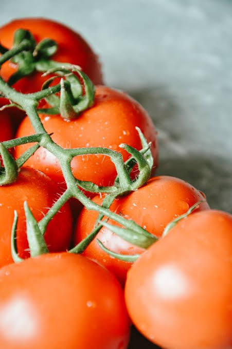
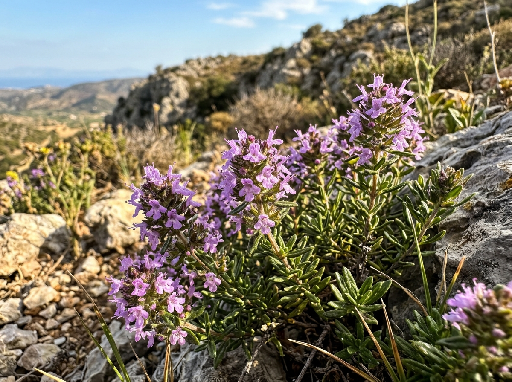
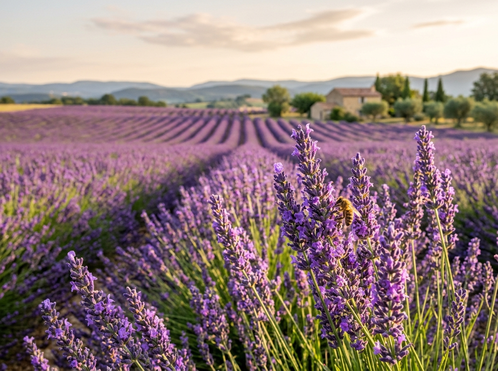

YAĞIŞVeri bekleniyor
TARIMYOL · TARIM YÖNETİMİNASA POWER VERİSİ
Tarlan için
akıllı bir yol haritası.
Toprağını tanı, sezonu güvenle planla. Konumuna özel iklim ve toprak verilerini ekimden hasada uzanan bir yol haritasına dönüştür.
 TARLA BİTKİLERİ
Tarla BitkileriTahıl, yemeklik baklagil ve endüstriyel tarla ürünleri rehberi.
Ürünleri keşfet
TARLA BİTKİLERİ
Tarla BitkileriTahıl, yemeklik baklagil ve endüstriyel tarla ürünleri rehberi.
Ürünleri keşfet
 MEYVE & BAĞ
Meyvecilik & BağMeyve ağaçları, sert kabuklular, narenciye ve bağcılık rehberi.
Ürünleri keşfet
MEYVE & BAĞ
Meyvecilik & BağMeyve ağaçları, sert kabuklular, narenciye ve bağcılık rehberi.
Ürünleri keşfet

SEBZE ÜRETİMİ Sebze BitkileriAçık alan ve örtüaltı sofralık sebzeler, fide ve hasat takvimi. Ürünleri keşfet
FİTOTERAPİ & SAĞLIK Tıbbi BitkilerAdaçayı, kantaron, ekinezya ve şifalı tıbbi türler rehberi. Ürünleri keşfet
UÇUCU YAĞ & BAHARAT Aromatik BitkilerLavanta, kekik, biberiye ve nane gibi uçucu yağ bitkileri. Ürünleri keşfet KABA YEM & MERA Yem BitkileriYonca, korunga ve fiğ gibi protein zengini kaba yemler. Ürünleri keşfetPlanla, takip et, doğru zamanda müdahale et.
Sezon planından parsel haritasına ve hava koşullarına dayalı ilaçlama kararlarına kadar tüm saha araçların tek çalışma alanında.
01 / TARLAN
Bilgileri gir
♧
02 / ANALİZİNSezon planın burada
hayat bulacak.
Tarla bilgilerini doldur. Konumuna ait NASA POWER iklim verileriyle sana özel bir plan hazırlayalım.
✳NASA POWERGünlük meteorolojik ve güneş verisi
02 / PARSEL VE İLAÇLAMA
Parselini izle, ilaçlamanı planla
Parsel sınırını haritada işaretle, tarih aralığını seç ve NASA AppEEARS'tan NDVI iste. Son dönem ortalaması parseli renklendirir; ortalama, minimum ve maksimum değerler aşağıda listelenir.
Harita yükleniyor...
Konum veya parsel numarasıyla bulYeri adıyla ara ya da resmi il, ilçe, mahalle, ada ve parsel bilgilerini gir
İl, ilçe ve mahalleyi seç; ada ve parsel numaralarını yaz.
Düşük NDVI Orta YüksekHaritanın sağ üstünden NDVI, EVI, SMAP toprak nemi, LST yüzey sıcaklığı ve SRTM yükselti katmanlarını açıp kapatın.
TARLAN · 5 VERİ KATMANI
Tarlanı farklı gözlerle gör
Beş harita aynı tarla konumunu izler. Haritayı sürükleyerek çevreyi incele; bir katmanı büyük haritada aç.
Tarla konumu bekleniyor
Bitki örtüsü · NDVI
MODIS Terra · 8 günlükBitki canlılığı · EVI
MODIS Terra · 8 günlükToprak nemi · SMAP
NASA SMAP · yüzeyYüzey sıcaklığı · LST
MODIS Terra · gündüzYükselti · SRTM
NASA SRTM · araziZemin haritası © OpenStreetMap katkıcıları · Uydu katmanları NASA GIBS. Veriler bölgesel ölçektedir; küçük parsellerdeki farklılıkları tek başına göstermez, ölçüm tarihine ve piksel çözünürlüğüne bağlıdır.
Token yalnızca yerel sunucudan NASA'ya gönderilir.
NASA/AppEEARS isteği için geçerli bir AppEEARS token'ı gerekir; yaklaşık 48 saatte bir yenilenir. MODIS 250 m piksel çözünürlüğündedir ve küçük parsellerde komşu alanları da etkileyebilir. Parsel çizimleri bu tarayıcıda saklanır.
Bitki Türleri ve Ürün Rehberi
İncelemek istediğiniz bitki türünü seçerek ekim, hasat ve detaylı yetiştirme rehberini görüntüleyin.
TARLA BİTKİLERİ
Tarla BitkileriTahıl, baklagil ve endüstri bitkileri için ürün kartları.
Ürünleri keşfet
MEYVE & BAĞ
Meyvecilik & BağMeyve ağaçları, sert kabuklular ve bağcılık rehberi.
Ürünleri keşfet
SEBZE ÜRETİMİ
Sebze BitkileriAçık alan ve örtüaltı sebze dikim ve hasat takvimi.
Ürünleri keşfet
FİTOTERAPİ & SAĞLIK
Tıbbi BitkilerAdaçayı, kantaron, ekinezya ve şifalı tıbbi türler.
Ürünleri keşfet
UÇUCU YAĞ & BAHARAT
Aromatik BitkilerLavanta, kekik, biberiye ve nane gibi uçucu yağ bitkileri.
Ürünleri keşfet
KABA YEM & MERA
Yem BitkileriYonca, korunga ve fiğ gibi protein zengini yem bitkileri.
Ürünleri keşfet
TARIM ALANI
Tarla Bitkileri 16 Çeşit
Tahıllar, yemeklik tane baklagiller, endüstri bitkileri ve yem bitkileri
Tarla bitkileri için bölge ve yetişme koşulları
Tarla bitkileri geniş tarım arazilerinde yetiştirilir; gıda, hayvan yemi ve sanayi için temel ürünleri sağlar. Tahıllar, baklagiller, endüstri bitkileri ve yem bitkileri bu gruptadır. Birçoğu tek yıllık olup tohumla çoğalır; patates yumrusuyla üretilir, yonca ve korunga gibi yem bitkileri ise çok yıllık yaşayabilir.
Türkiye'nin farklı iklim ve toprak koşulları çok sayıda tarla bitkisinin yetişmesine imkân verir. Aşağıdaki tablolar tahıl, yemeklik tane baklagil, endüstri ve yem bitkilerini yetişme istekleri ile öne çıkan üretim bölgelerine göre ayırır. Bölge bilgileri geneldir; ilçe, rakım, çeşit, ekim zamanı, su kaynağı ve toprak analizi kararı değiştirebilir.
A. Tahıllar · Serin ve sıcak iklim tahılları
| Bitki türü | En verimli iklim ve toprak koşulları | Türkiye'de öne çıkan bölgeler |
|---|---|---|
| Buğday | Büyümede serin ve nemli, olgunlaşmada sıcak ve kurak karasal iklim. | İç Anadolu, Trakya (Marmara), Güneydoğu Anadolu. |
| Arpa | Buğdaya kıyasla soğuğa, kuraklığa ve tuzluluğa daha dayanıklıdır; erken olgunlaşır. | İç Anadolu, Doğu Anadolu, Güneydoğu Anadolu. |
| Mısır | Sıcak, bol güneşli ve nemli iklim ister; su tüketimi yüksektir. | Karadeniz (yağışlı), Akdeniz ve Ege (sulu tarım). |
| Çeltik (pirinç) | Çimlenmeden hasada kadar tava alınmış, su tutan tarlada ve yüksek sıcaklıkta yetişir. | Marmara (Edirne/Ergene Havzası), Karadeniz (Samsun). |
| Yulaf | Serin ve nemli gelişme koşullarına uyumludur. | Marmara ve Karadeniz. |
| Çavdar | Soğuk koşullara ve verimliliği düşük topraklara diğer tahıllara göre daha toleranslıdır. | İç Anadolu ve soğuk-yüksek kesimler. |
B. Yemeklik tane baklagiller
| Bitki türü | En verimli iklim ve toprak koşulları | Türkiye'de öne çıkan bölgeler |
|---|---|---|
| Kırmızı mercimek | Sıcağa ve şiddetli kuraklığa dayanıklı baklagillerdendir. | Güneydoğu Anadolu. |
| Yeşil mercimek | Kırmızı mercimeğe göre daha serin iklim koşullarını tolere edebilir. | İç Anadolu; özellikle Yozgat, Çorum ve Kırşehir. |
| Nohut | Yarı kurak iklim bitkisidir; sıcağa dayanır ve görece fakir topraklarda yetişebilir. | İç Anadolu, Ege ve Güneydoğu Anadolu. |
| Kuru fasulye | Ilıman gelişme dönemi ile düzenli yağış veya sulama ister. | İç Anadolu (sulu tarım), Karadeniz ve Doğu Anadolu. |
C. Endüstri (sanayi) bitkileri
| Bitki türü | En verimli iklim ve toprak koşulları | Türkiye'de öne çıkan bölgeler |
|---|---|---|
| Pamuk | Uzun, güneşli ve sıcak büyüme sezonu ister; koza oluşumunda bol suya ihtiyaç duyar. | Güneydoğu Anadolu, Ege ve Çukurova. |
| Ayçiçeği | Gelişmede yeterli su; çiçeklenme ve olgunlaşmada bol güneş ister. | Marmara (Trakya), İç Anadolu ve Karadeniz. |
| Şeker pancarı | Serin/ılıman iklim, yeterli su ve gece-gündüz arasında sıcaklık farkı ister. | İç Anadolu (Konya, Eskişehir) ve Doğu Anadolu. |
| Tütün | Ilıman koşullara uyumludur; kıraç ve humusça daha fakir topraklarda yaprak kalitesi artabilir. Uygun koşullar çeşit ve kullanım amacına göre değişir. | Ege ve Karadeniz. |
| Patates (yumru) | Serin iklimi, gevşek kumlu-tınlı toprağı ve düzenli suyu sever. | İç Anadolu (Niğde, Nevşehir) ve Ege (Ödemiş). |
D. Yem bitkileri
| Bitki türü | En verimli iklim ve toprak koşulları | Türkiye'de öne çıkan bölgeler |
|---|---|---|
| Yonca | Sıcak koşulları sever ve derin köklenir; yüksek verim için düzenli sulama ister. | İç Anadolu, Ege ve Doğu Anadolu. |
| Korunga | Kireçli, zayıf, kurak ve kıraç topraklara yoncadan daha dayanıklıdır. | İç Anadolu ve Doğu Anadolu. |
| Fiğ | Serin iklimde, yağışlı koşullarda iyi gelişir. | İç Anadolu, Karadeniz ve Marmara. |
Kaynak: Kullanıcının sağladığı Tarla Bitkileri Rehberi.pdf ve eklediği yetiştiricilik metni. Bilgiler dört alt grupta düzenlenmiştir. Bölge ve iklim bilgileri genel yönlendirmedir; ekim kararı öncesinde yerel tarım danışmanlığı, güncel su durumu ve toprak analiziyle doğrulanmalıdır.
Tarım alanlarının ötesinde bitki toplulukları
Orman, mera, sulak alan ve bozkırlardaki bitkiler; üretim değerinin yanında suyu, toprağı ve canlı çeşitliliğini destekler.
Orman ve Endüstriyel Ağaçlar

Tanım ve kullanım: Orman ağaçları doğal habitat, karbon depolama, su döngüsü ve toprak korumasında rol oynar; kereste, kâğıt, reçine ve biyokütle sağlar.
Yaşam ve çoğalma: Çam, ladin, sedir, meşe ve kayın gibi türler çok yıllık ve odunsudur. Tohumdan fidan, kavak gibi türlerde çelikle çoğaltma kullanılır; derin kök ve kalınlaşan gövde geliştirirler.
İklim ve örnekler: Ladin ve kayın serin-nemli; kızılçam ve bazı meşeler daha sıcak ve kurak sahalara uyumludur. Toprak derinliği, drenaj, yangın ve kuraklık riski dikkate alınır. Örnekler: kızılçam, karaçam, sarıçam, sedir, ladin, meşe, kayın ve kavak.
Doğal Çayır ve Mera Bitkileri

Tanım ve kullanım: Çayır ve meralar hayvan yemi üretir; yaban hayatına habitat sunar, erozyonu azaltır ve yağış suyunun tutulmasına katkı verir. Çayırlar çoğunlukla biçilir, meralar otlatılır.
Yaşam ve çoğalma: Topluluklarda çok yıllık buğdaygiller ve baklagiller yaygındır. Yumak oluşturan türler, rizomla yayılan ayrıklar ve kazık köklü yonca/korunga; tohum, kardeşlenme veya toprak altı sürgünleriyle yenilenir.
İklim ve örnekler: Tür bileşimini yağış, yükselti, sıcaklık, toprak derinliği ve otlatma baskısı belirler. Yerel koşullara göre yumak, ayrık, çayır salkımotu, üçgül, yonca, korunga ve geven görülür. Aşırı otlatma örtüyü zayıflatır; dinlendirme ve dönüşümlü otlatma yenilenmeyi destekler.
Su ve Sulak Alan (Sucul) Bitkileri

Tanım ve kullanım: Suda veya suya doygun toprakta yaşayan bu bitkiler kıyı erozyonunu azaltır, besin maddelerini tutar ve su canlıları ile kuşlara barınak sağlar.
Yaşam ve çoğalma: Saz ve hasırotunun kökleri çamura tutunurken gövdeleri su üstüne çıkar; nilüferin yaprakları yüzer, su mercimeği serbestçe yüzebilir. Hava boşluklu dokular oksijen taşımaya yardım eder. Tohum, rizom ve bitki parçalarıyla yayılım görülür.
İklim ve örnekler: Su derinliği, akış, ışık, sıcaklık ve tuzluluk tür seçimini belirler. Örnekler: saz (Phragmites), hasırotu (Typha), nilüfer ve su mercimeği. Sulak alanlarda yerel türler tercih edilmeli, istilacı bitkiler doğaya bırakılmamalıdır.
Türkiye’nin Endemik Bitkileri

Tanım ve kullanım: Endemik türlerin doğal yayılışı belirli bir coğrafyayla sınırlıdır. Türkiye’nin iklim ve jeoloji çeşitliliği, yalnızca burada doğal olarak bulunan türlerin gelişmesine olanak verir. Endemik olmak tek başına tehlike altında olmak anlamına gelmez.
Yaşam ve çoğalma: Tek yıllık otsular, çok yıllık soğanlılar, çalılar ve ağaçlar bu gruba girebilir. Çoğu tohumla; bazıları soğan, rizom veya yumruyla çoğalır. Doğadan söküm dar yayılışlı popülasyonlara zarar verebilir.
İklim ve örnekler: Dağ, bozkır ve özel jeolojik zeminlere bağlı türlerin istekleri farklıdır; yerel habitat koşulları korunmalıdır. Örnekler: Ankara çiğdemi (Crocus ancyrensis), Eber sarısı (Thermopsis turcica), sevgi çiçeği (Centaurea tchihatcheffii), Kasnak meşesi (Quercus vulcanica) ve Kazdağı göknarı (Abies equi-trojani).
Yabancı Otlar (Herboloji)

Tanım ve kullanım: Herboloji yabancı otları ve tarımla ilişkilerini inceler. Tarlada istenmeyen bir bitki başka habitatta polen, nektar ve örtü sağlayabilir; üründe su, ışık ve besin rekabetine yol açabilir.
Yaşam ve çoğalma: Tek yıllık türler tohum bankası oluşturabilir; ayrık ve kanyaş rizomlarla, tarla sarmaşığı kök sürgünleriyle yayılır. Tohum ve bitki parçaları rüzgâr, su, hayvan veya tarım makineleriyle taşınabilir.
İklim ve örnekler: Çimlenme zamanı sıcaklık, nem, ışık ve toprak işlemeye bağlıdır. Yabani yulaf, tilki kuyruğu, gelincik, sirken, kanyaş, ayrık ve tarla sarmaşığı yaygın örneklerdir. Yönetimde münavebe, temiz tohumluk ve mekanik/kültürel yöntemler değerlendirilir; ilaç kararları tanı ve ruhsat etiketine dayanmalıdır.
Egzotik ve Ekstrem Koşul Bitkileri

Tanım ve kullanım: Bu ortak bir botanik sınıfı değil; etobur, parazit ve çöl bitkileri gibi farklı grupların sıra dışı uyumlarını anlatan bir başlıktır. Egzotik tür doğal yayılış alanı dışındadır; doğaya salınması istilacı tür riski yaratabilir.
Yaşam ve çoğalma: Sinekkapan fotosentez yapar, böceklerden mineral alır. Küsküt ve canavar otu konukçudan kaynak alır; kaktüs ve sukulentler suyu gövde veya yapraklarında depolar. Tohum, yavru, çelik veya soğanla çoğalma türe göre değişir.
İklim ve örnekler: Sinekkapan gibi bataklık etoburları güneşli, sürekli nemli, asitli ve besince fakir zemin ister; çöl kaktüsleri güneş ve hızlı drenaj ister. Örnekler: Dionaea, Drosera, Nepenthes, küsküt, canavar otu, ökseotu, kaktüs ve agav. Doğal habitat ve tür gereksinimleri ayrı ayrı gözetilmelidir.
MEYVECİLİK & BAĞ
Meyvecilik ve Bağcılık 15 Çeşit
Meyve ağaçları, sert kabuklular, turunçgiller ve bağcılık rehberi

Meyvecilik
Tanım ve kullanım: Meyve ağaçları ve çalıları taze tüketim, kurutma, meyve suyu ve işleme sanayisi için yetiştirilir. Bahçeler ayrıca tozlayıcılara ve tarımsal peyzaja katkı verir.
Yaşam ve çoğalma: Meyve ağaçları çok yıllık ve odunsudur. Tohumdan çöğür elde edilir; çeşidi korumak için çoğunlukla anaç üzerine aşı yapılır. Taç şekli, budama ve tozlayıcı çeşitler verim ve kaliteyi etkiler.
İklim ve örnekler: Elma, armut ve kirazda kış soğuklaması önemlidir; turunçgiller donlara duyarlıdır. Derin, drenajlı tınlı toprak ve türe uygun sulama tercih edilir. Elma, kayısı, kiraz, zeytin, ceviz ve turunçgiller öne çıkan örneklerdir.
Sebzecilik

Tanım ve kullanım: Sebzeler taze tüketim, konserve, dondurma ve kurutma gibi yollarla değerlendirilir. Açıkta veya örtü altında yetiştirilebilir; çeşit seçimi kullanım amacı ve hasat zamanına göre yapılır.
Yaşam ve çoğalma: Domates, biber, fasulye ve kabak çoğunlukla tek yıllık üretim döngüsündedir. Lahana ve havuç gibi bazıları tohum üretirken iki yıllık döngü izler. Tohum, fide, yumru veya soğanla çoğalma türüne bağlıdır; kök yapısı kazık ya da saçak olabilir.
İklim ve örnekler: Domates, biber ve hıyar sıcak dönemleri; bezelye, ıspanak ve marul daha serin havayı sever. Güneşli alan, organik maddesi yeterli ve drenajlı toprak çoğu sebzeye uygundur. Domates, biber, fasulye, patates, soğan, lahana ve kabak örnek verilebilir.
Bağcılık
Tanım ve kullanım: Asma; sofralık üzüm, kurutmalık üzüm, pekmez ve şıra gibi ürünler için yetiştirilir. Bağcılık, çok yıllık tesis ve uzun dönemli terbiye yönetimi gerektirir.
Yaşam ve çoğalma: Asma odunsu, çok yıllık ve sarılıcı bir bitkidir. Üretimde çelik ve aşılı fidan kullanılır; terbiye sistemi, budama ve omca aralığı çeşide ve mekanizasyona göre seçilir.
İklim ve örnekler: Güneşli ve uzun bir büyüme dönemi üzüm olgunlaşmasını destekler; su birikmesi kök sağlığını olumsuz etkiler. Toprak drenajı, kireç ve tuzluluk toleransı anaç/çeşide göre dikkate alınır. Sofralık, kurutmalık ve şaraplık üzüm çeşitleri yetiştirilir.
Süs Bitkileri

Tanım ve kullanım: Süs bitkileri bahçe, park ve iç mekânlarda görsel düzenleme; kesme çiçek, saksı ve peyzaj için yetiştirilir. Yerel tür ve uygun tür seçimi kentlerde su kullanımını azaltabilir, tozlayıcılara kaynak sağlar.
Yaşam ve çoğalma: Tek yıllık mevsimlik çiçekler, çok yıllık otsular, soğanlılar ve odunsu çalı/ağaçlar bu gruptadır. Tohum, çelik, aşı, soğan ve yumruyla çoğaltma türüne göre kullanılır.
İklim ve örnekler: Güneş ve su ihtiyacı türden türe değişir; iyi drenaj çoğu saksı bitkisinde kök sağlığı için önemlidir. Gül, lale, sümbül, krizantem, sardunya ve mevsimlik petunya yaygın örneklerdir.
Tıbbi ve Aromatik (Kokulu) Bitkiler

Tanım ve kullanım: Uçucu yağ, koku veya tat taşıyan bitkiler baharat, gıda, kozmetik ve parfümeri hammaddesi olarak kullanılır. Geleneksel kullanım, güvenli doz veya tedavi etkinliği garantisi değildir; doğru tür teşhisi önem taşır.
Yaşam ve çoğalma: Papatya ve kişniş tek yıllık; lavanta, kekik, adaçayı, nane ve biberiye çoğunlukla çok yıllıktır. Tohumla üretimin yanında çelik ve kök bölme yapılabilir; yaprak ve çiçeklerdeki aromatik bezeler kokuyu oluşturur.
İklim ve örnekler: Lavanta, kekik ve adaçayı güneşli, sıcak, kireçli ve geçirgen zemine uyumludur; nane daha nemli ve organik maddeli toprağı sever. Kekik, lavanta, adaçayı, nane, biberiye, melisa, papatya, anason ve kimyon örnekleridir.
SEBZE ÜRETİMİ
Sebze Bitkileri 8 Çeşit
Açık alan ve örtüaltı sebzeleri, sofralık ve sanayi çeşitleri
FİTOTERAPİ & SAĞLIK
Tıbbi Bitkiler 6 Çeşit
Eczacılık, fitoterapi, şifalı çay ve sağlık sanayisi bitkileri
UÇUCU YAĞ & BAHARAT
Aromatik Bitkiler 6 Çeşit
Kozmetik, parfümeri, baharat ve uçucu yağ ekstraksiyonu ürünleri
KABA YEM & MERA
Yem Bitkileri 5 Çeşit
Besi ve süt hayvancılığı için kaliteli proteinli kaba yem ve silaj bitkileri